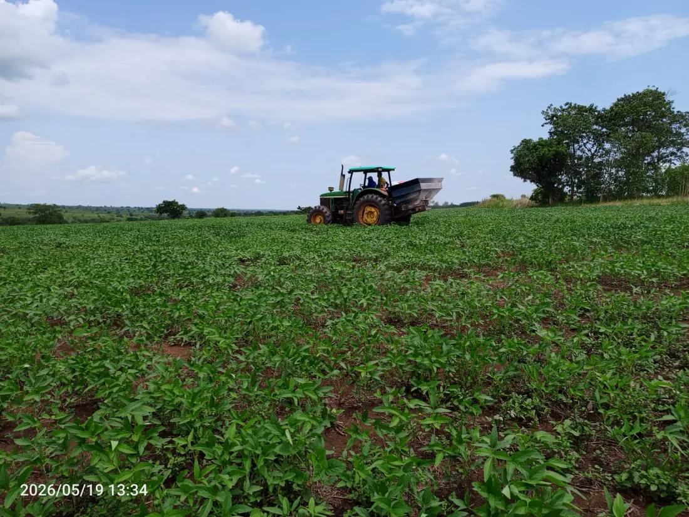
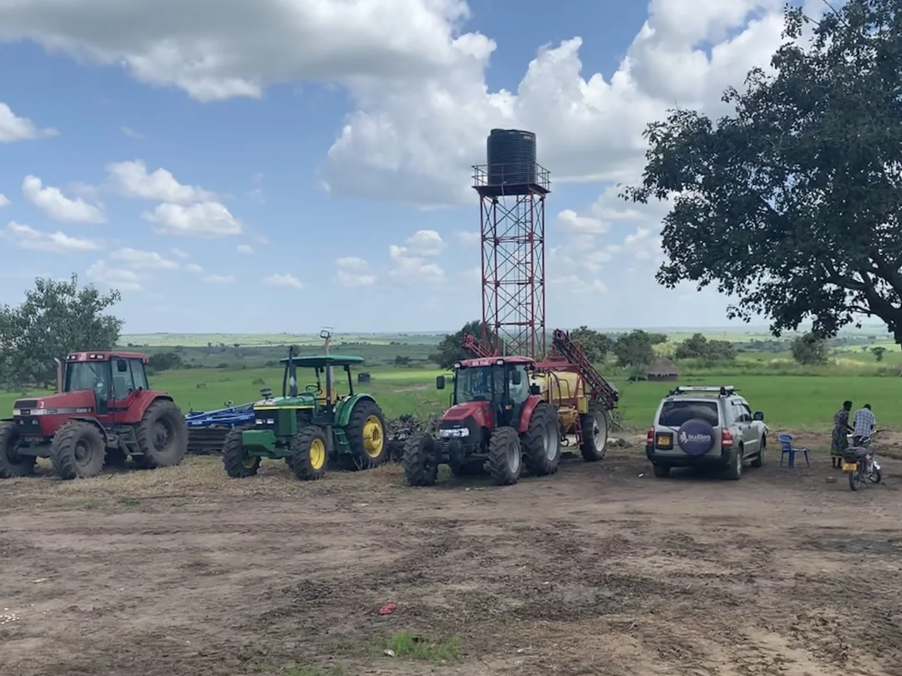

Mechanisation and training for the neighbourhood.
Alongside its own production, Normah offers consultancy to smallholders on mechanised farming practices, training and demonstration farming.
Mechanisation services
Normah's tractors, combine harvesters and implements support consultancy work with smallholders on mechanised farming practices in the district. Planned

Training and demonstration farming
Training and demonstration farming sessions introduce mechanised practices and Normah's soil-first agronomy to smallholders working nearby.

Planned district pack houses Planned
Aggregation stores and pack houses are planned for four districts, bringing storage and consolidation closer to smallholders and other producers in the region.
Fair wages and local hiring
Normah's operating team is built around local hiring and skills transfer from expatriate staff to Ugandan employees, with fair wages as a stated commitment.
Working with Normah as a grower or service customer?
This is a separate conversation from a buyer quote — use the general enquiry form on the contact page.